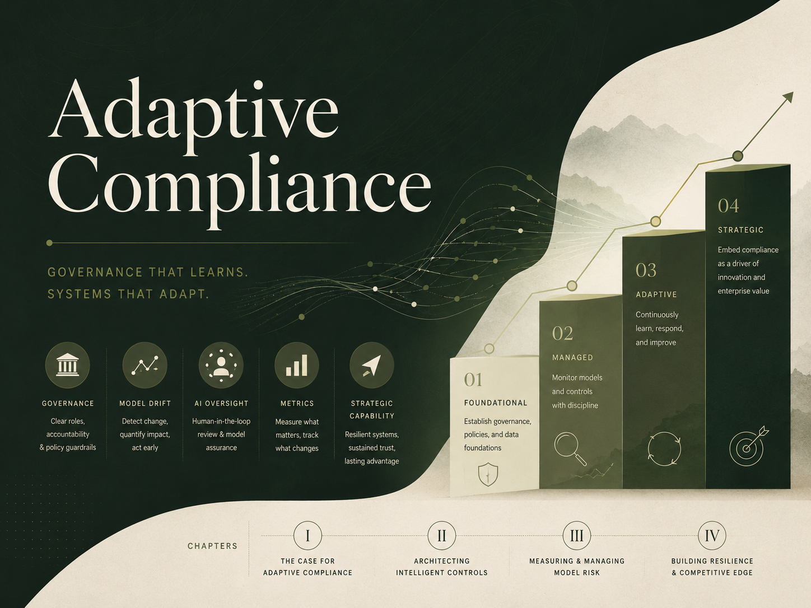

The Industry Solved the Wrong Problem
For more than twenty years, financial-crime compliance has optimized for efficiency. The next era will be defined by adaptability.
Read Chapter 1 · 10 min →A growing body of work on model governance, organizational learning, responsible growth and the strategic value of compliance.
Why financial-crime compliance must evolve from periodic control testing into a continuous organizational capability.

Volume IRead the full designed edition, including the foreword, eight-chapter argument, leadership toolkit, maturity diagnostic, glossary and references.
A refined presentation version of The End of Rules Alone, redesigned to match this site and structured for board, leadership or conference discussions.
The complete argument moves from efficiency and model drift to organizational design, adaptive metrics and strategic capability.
For more than twenty years, financial-crime compliance has optimized for efficiency. The next era will be defined by adaptability.
Read Chapter 1 · 10 min →Enforcement actions reveal a consistent pattern: governance often fails to recognize that the assumptions behind controls have become outdated.
Read Chapter 2 · 7 min →Drift is not evidence that a model has failed. It is evidence that the environment and the institution’s understanding of risk are moving apart.
Read Chapter 3 · 6 min →Maturity should be measured by an organization’s capacity to learn—not simply by the sophistication of its technology.
Read Chapter 4 · 6 min →AI’s greatest opportunity is not processing more work. It is allowing organizations to observe and govern changing risk continuously.
Read Chapter 5 · 8 min →Adaptive compliance requires organizations intentionally designed to move intelligence, challenge assumptions and learn across functional boundaries.
Read Chapter 6 · 8 min →Traditional dashboards measure operational efficiency. Adaptive metrics measure whether the organization is learning and responding to change.
Read Chapter 7 · 9 min →The ability to understand changing risk early is becoming inseparable from the ability to make commercial decisions with confidence.
Read Chapter 8 · 9 min →How payments and fintech companies use compliance to create trust, protect market access, improve product design and move with greater confidence.
In payments and fintech, compliance is not simply a control function. It is part of the infrastructure on which licences, bank relationships, payment rails, enterprise customers and responsible growth depend.
Strong compliance earns confidence from regulators, banks, partners and customers.
Connected risk information improves product, market and customer decisions.
Earlier compliance involvement creates certainty before launch decisions harden.
Adaptive governance creates resilience. Strategic compliance creates trust, access and responsible growth.